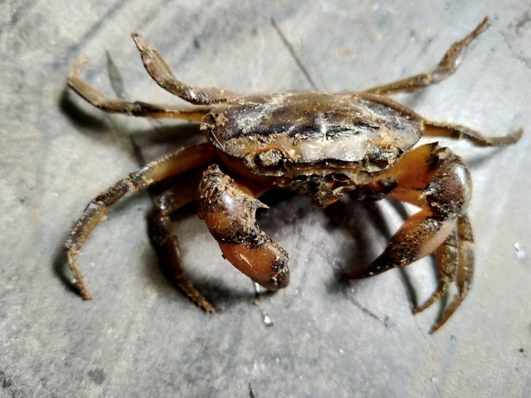

केकड़ाSpiny Paddy Crab
Sartoriana spinigera · Gecarcinucidae · CRU-0002

- Scientific name वैज्ञानिक नाम
- Sartoriana spinigera (Wood-Mason, 1871)
- Family कुल
- Gecarcinucidae
- Hindi हिंदी
- केकड़ा / खेत का केकड़ा
- Local names स्थानीय नाम
- kekra, kekda, khet ka kekra, meethe pani ka kekra
- Status here यहाँ की स्थिति
- native
- Movement आवागमन
- Resident, here all year
- Known from कहाँ दर्ज
- Others have published records from the wider Awadh–Purvanchal plain, none yet from Basti–Ayodhya अवध–पूर्वांचल से दूसरों के प्रकाशित अभिलेख, बस्ती–अयोध्या से अभी नहीं
- IUCN IUCN
- not evaluated
- Review समीक्षा
- not yet reviewed
When to look कब देखें
Present all year. साल भर मौजूद।
Uses and possibilities उपयोग और संभावनाएँ
Drawn from the documented uses in the profile below, where each is labelled traditional, current or a research lead. All uses →
Tell it apart from इनसे अलग पहचानें
Connections रिश्ते
- preyed on by बगुला · Indian Pond Heron
- preyed on by राम चिरैया · Common Kingfisher
Documented relationships from the profiles; the web grows as profiles are written.
केकड़ा / Spiny Paddy Crab
Sartoriana spinigera (Wood-Mason, 1871) — Gecarcinucidae
केकड़ा — गंगा के मैदान के धान-खेतों, तालाबों और नहरों के किनारे बिल बनाकर रहने वाला मीठे पानी का केकड़ा। प्रकाशित विवरणों के अनुसार इसका कवच चौड़ा, मज़बूत और ऊपर से चिकना होता है, रंग लाल-भूरा, और आगे के हर किनारे पर एक नुकीला काँटा — इसी से इसका नाम spinigera पड़ा। रात में बाहर निकलता है, दिन में बिल में रहता है। मरी हुई चीज़ें, घोंघे और पानी के कीड़े खाता है; धान की नई पौध काटने की शिकायत भी मैदानी केकड़ों के बारे में मिलती है।
Quick Identification त्वरित पहचान
| Feature | Description |
|---|---|
| Size | A small to medium field crab, broader than long; no measured series was found for this profile, so no figure is given |
| Carapace | Broad, robust and deep; the top smooth, gently convex, almost polished, with an H-shaped groove behind the eyes (Bangladesh fauna account) |
| Spine | One sharp epibranchial spine at the end of each curved front side-margin — the spinigera of the name; no other large spines |
| Colour | Reddish-brown above, the underside light yellowish; some animals with minute brown spots (Bangladesh fauna account) |
| Claws | Unequal in both sexes; the palm broad and stout, the movable finger longer than the palm |
| Legs | Four pairs of stout walking legs; sideways gait |
| Burrows | Round or oval openings on bunds and channel banks with excavated soil beside them |
Field tip: Look for small crabs at night along irrigation channel banks in rice-growing blocks, especially July–September. Search for burrow entrances with soil mounds nearby. Distinguishable from other field crabs by the single sharp spine on each front margin and the smooth, polished back.
Morphology आकारिकी
Measurements. No measured series for Sartoriana spinigera was found while this profile was written; sizes will be added from a revision of the genus or from a local specimen.
Carapace: Broad, robust and deep; dorsal surface smooth, gently convex and almost polished, with the H-shaped gastric groove; the epibranchial and mesobranchial regions swollen; the antero-lateral margin sharp, curved, smooth or faintly crenulated, ending in one acute epibranchial spine; orbits small and broad without large spines. Reddish-brown above, light yellowish below (Bangladesh fauna account, after Wood-Mason 1871).
Chelipeds: Unequal in both sexes, with spines near the far end of the merus; the palm broad and stout, the movable finger longer than the palm; the inner angle of the carpus sharp-pointed.
Legs: Four pairs of walking legs; flattened and adapted for grip on muddy substrates.
Sexual dimorphism: Males have narrower, triangular abdomens; females have broader, rounded abdomens bearing eggs.
Eyes and antennae: Eyes on short stalks; antennae moderately long.
Behaviour & Ecology व्यवहार और पारिस्थितिकी
Burrower and scavenger. Sartoriana spinigera is a primary inhabitant of wet agricultural landscapes across the Gangetic plain. It is a vigorous burrower, excavating branched tunnels in channel banks and paddy field bunds. Nocturnal and crepuscular, it emerges to forage at dusk and during the night — consuming dead plant matter, aquatic insect larvae, small fish, snails, and organic detritus. It plays a significant role in decomposing dead organic matter in agricultural wetlands, thus recycling nutrients.
Bioturbation. The burrowing activity of this crab mixes and aerates channel bank soils, improving water infiltration and soil permeability. These burrows also provide refuge for other small animals including frogs and toads.
Position in food web. Preyed on by Indian Pond Heron, Common Kingfisher, and various snakes. Competes with other crab species and with fish for invertebrate prey in paddy fields.
Direct development. Like all Gecarcinucidae, females produce relatively large yolky eggs and carry them under the abdomen. Juveniles are miniature versions of adults; there is no larval (zoeal) stage. This lack of a planktonic dispersal phase means that isolated populations cannot naturally recolonize disconnected water bodies.
Life Cycle / Phenology जीवन चक्र
| Month | Event |
|---|---|
| June–July | Peak breeding season with monsoon onset; females carry eggs |
| August–September | Nymphs hatch and grow within burrows; most active foraging |
| October–November | Continued activity; approaching dry season |
| December–February | Reduced activity as soil dries; populations retreat to deeper channels and permanent water bodies |
| March–May | Aestivation or dormancy in deep burrows; minimal surface activity |
Lifespan: not established in the sources we found. The calendar above is the expected monsoon rhythm of Gangetic field crabs, not a measured one.
Host Plants or Prey आहार
Diet (omnivorous scavenger):
- Dead organic matter and detritus
- Aquatic insect larvae
- Small freshwater snails
- Soft-bodied invertebrates
- Rice seedlings and plant roots (in paddy fields)
- Algae and aquatic plants
Predators / Natural Enemies शत्रु
- Indian Pond Heron (Ardeola grayii, BRD-0004)
- Common Kingfisher (Alcedo atthis, BRD-0010)
- Water snakes (various species)
- Humans — eaten in coastal Odisha, where its meat has been analysed (Pati et al. 2012); whether it is eaten here is a question for the form
Agricultural / Human Relevance कृषि प्रासंगिकता
Paddy fields. Field crabs of the Gangetic plain are blamed for cutting transplanted seedlings and for burrows that leak bunds; how much of that is this species, and how much it matters here, is not recorded in any source we found.
Food — traditional use. Eaten in coastal Odisha, where its meat has been analysed (Pati et al. 2012). Whether it is eaten in eastern Uttar Pradesh is not recorded in the sources we found; the form is the place to say so.
Indicator of hydrological connectivity. Because Gecarcinucid crabs lack planktonic dispersal, their presence indicates perennial water connectivity in irrigation systems. Their absence from isolated channels suggests hydrological fragmentation.
Expected Locally स्थानीय रूप से अपेक्षित
Not a field record. Written from published accounts for eastern Uttar Pradesh. No confirmed local sighting yet — if you have seen it, that is what the atlas needs.
अभी तक स्थानीय पुष्टि नहीं। यह विवरण प्रकाशित स्रोतों से है, किसी अवलोकन से नहीं।
GBIF holds published records from the wider Awadh–Purvanchal plain, none yet from Basti–Ayodhya. From its published habitat — paddy fields, ponds, beels and canals, rarely rivers — look for burrow openings in bunds and channel banks, and for the crabs themselves on the banks at night in the monsoon, July to September. A first record would be a photograph of the crab from above, showing the front margin with its single spine, with place and date, sent through the About page.
Distribution वितरण
Global range: India, Nepal, Bangladesh, Pakistan, Sri Lanka and Myanmar (Pati et al. 2012); widespread in Bangladesh (Bangladesh fauna account).
In India: Northern and eastern India, from the Gangetic plain to Bengal and Odisha.
In Uttar Pradesh: GBIF holds records from the Awadh–Purvanchal plain.
In Basti district / eastern UP: No published record from the core districts; expected in paddy and canal country on range and habitat grounds.
Research Questions शोध प्रश्न
- What is the impact of Sartoriana spinigera burrowing on soil aeration and crop yield in eastern UP paddy fields?
- Can farmers predict seedling damage based on crab burrow density at the start of the planting season?
- How does the species' population respond to different irrigation schedules and water availability?
- क्या नहरों की कंक्रीटिंग से इस केकड़े की आबादी में बदलाव आता है?
- What is the role of Sartoriana spinigera in nutrient cycling in agricultural wetlands?
Similar Species मिलती-जुलती प्रजातियाँ
| Species | Key Difference | हिंदी | |
|---|---|---|---|
| [[freshwater_crab_paratelphusa\ | Paratelphusa jacquemontii]] | The other field crab profiled here; its front margin lacks the single sharp spine of Sartoriana | केकड़ा |
| Sartoriana blanfordi | The other northern species of the genus (Alcock 1909); separated by carapace and male gonopod characters in Bott (1970), not in the field | — |
Field rule: Smooth, polished reddish-brown back with one sharp spine at the end of each front margin, in paddy fields, ponds and canals of the plain = Sartoriana spinigera.
Taxonomy & Classification वर्गीकरण
Original description. Described by Wood-Mason (1871) as Telphusa spinigera in the Journal of the Asiatic Society of Bengal. Bott (1969) erected the genus Sartoriana with this as its type species; Ng, Guinot & Davie (2008) list five species in the genus. The name spinigera (spine-bearing) refers to the epibranchial spine.
Until November 2026 this profile carried the name Barytelphusa guerini, a species of peninsular India with no Uttar Pradesh record in GBIF; the profile was rewritten for the species that published records from the Awadh-Purvanchal plain support.
Subspecies. Monotypic — no subspecies are currently recognised.
Family and order placement. Order Decapoda, infraorder Brachyura, family Gecarcinucidae — the primary freshwater crabs of the Old World tropics. Of the five species of Sartoriana (Ng et al. 2008), S. spinigera and S. blanfordi are the northern Indian ones.
Phylogenetic notes. Sartoriana spinigera is closely related to other Gecarcinucid species of the Indian subcontinent, sharing the key derived character of direct development without a planktonic larval stage.
IUCN status rationale. Not evaluated. Widespread and common in suitable habitats; no specific conservation assessment available.
Photo Gallery फोटो गैलरी
No photos yet — add field photos to media/species/freshwater_crab/ and run node scripts/sync_photos.js.
References संदर्भ
- Wood-Mason, J. (1871). Contributions to Indian carcinology. On Indian and Malayan Telphusidae, Part I. Journal of the Asiatic Society of Bengal 40(2): 189–207. (original description, as Telphusa spinigera)
- Bott, R. (1969). Flußkrabben aus Asien und ihre Klassifikation. Senckenbergiana Biologica 50: 359–366. (the genus Sartoriana)
- Bott, R. (1970). Die Süßwasserkrabben von Europa, Asien, Australien und ihre Stammesgeschichte. Abhandlungen der Senckenbergischen Naturforschenden Gesellschaft 526: 1–338.
- Ng, P.K.L., Guinot, D. & Davie, P.J.F. (2008). Systema Brachyurorum: Part I. An annotated checklist of extant brachyuran crabs of the world. Raffles Bulletin of Zoology Supplement 17: 1–286.
- Pati, P.K. et al. (2012). Biochemical analysis of an endemic freshwater crab, Sartoriana spinigera (Wood-Mason) from east coast of India. The Bioscan 7(4): 681–683.
- Freshwater Biodiversity of Bangladesh. Sartoriana spinigera (Wood-Mason, 1871), species account. https://freshwaterbiodiversity.org.bd/?p=13148
- GBIF Occurrence Data — Sartoriana spinigera, Uttar Pradesh. https://www.gbif.org/species/search?q=Sartoriana%20spinigera
Source file: species/fauna/crustaceans/freshwater_crab.md